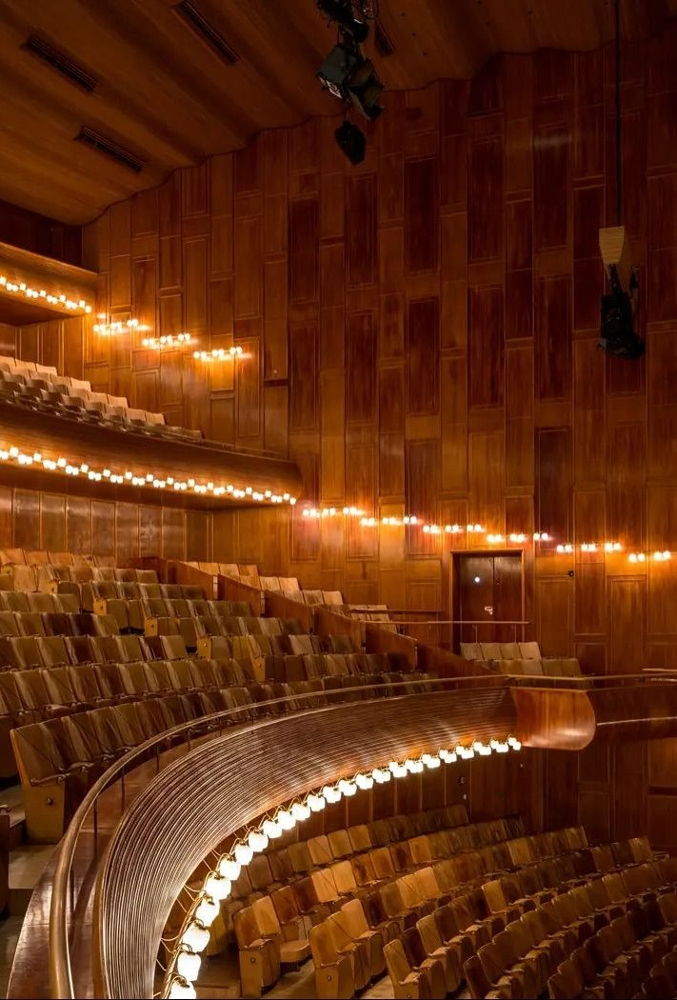

늦울림음악당
늦울림음악당은 희담동에 있는 412석 실내악 전용 공립 음악당입니다.

오늘
10월 12일(월) 휴관
월요일은 공연과 매표를 쉬고 대관 리허설만 받는다. 매표소는 10월 13일(화) 11:00에 연다.
이번 주 공연
-
10월 14일(수) 19:30 · 실내악
희담 현악 4중주 정기 연주 3
- 현악 4중주
- 희담 현악 4중주
R 50,000원 · S 40,000원 · A 25,000원 · 남은 자리 18 %
-
10월 16일(금) 19:30 · 독주
윤가람 피아노 독주회
- 피아노
- 윤가람
R 45,000원 · S 35,000원 · A 20,000원 · 남은 자리 36 %
-
10월 17일(토) 17:00 · 고음악
프랑스 궁정의 춤곡
- 합주
- 늦울림 고음악 합주단
- 하프시코드
- 서이담
R 40,000원 · S 30,000원 · A 20,000원 · 남은 자리 29 %
-
10월 18일(일) 15:00 · 성악
한소리 가곡의 오후
- 소프라노
- 한소리
- 피아노
- 문채원
R 40,000원 · S 30,000원 · A 20,000원 · 남은 자리 42 %
홀
- 좌석
- 412석 · 휠체어석 6
- 실 부피
- 4,600 m³ · 좌석당 11.2 m³
- 홀 길이 · 폭 · 높이
- 31 m · 21 m · 14.5 m
- 만석 잔향(500 Hz · 1 kHz)
- 1.95초
- 무대
- 13.2 × 8.4 m
- 개관
- 2018년 9월
공지
- 10월 12일
- 월요일 휴관. 매표소는 13일(화) 11:00에 연다.
- 10월 9일
- 11월 13일 '겨울 나그네'는 A석만 남았다.
- 10월 2일
- 12월 대관 신청은 10월 31일(토)까지 받는다.